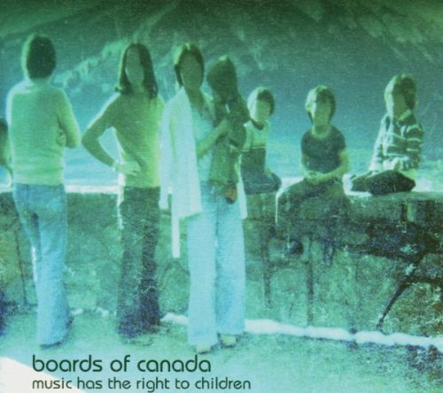

Mes go�ts musicaux
Boards of Canada
Ambient/IDM - Ecosse

C418
Ambient - Allemagne

PS : C'est le gars qui a compose la musique de Minecraft
Synthwave
Un peu partout dans le monde

C'est des musiques r�centes mais faites avec du matos des ann�es 80-90
Hip-Hop
Tout et n'importe quoi
Musique classique
C418
Ambient - Allemagne
PS : C'est le gars qui a compose la musique de Minecraft
Synthwave
Un peu partout dans le monde